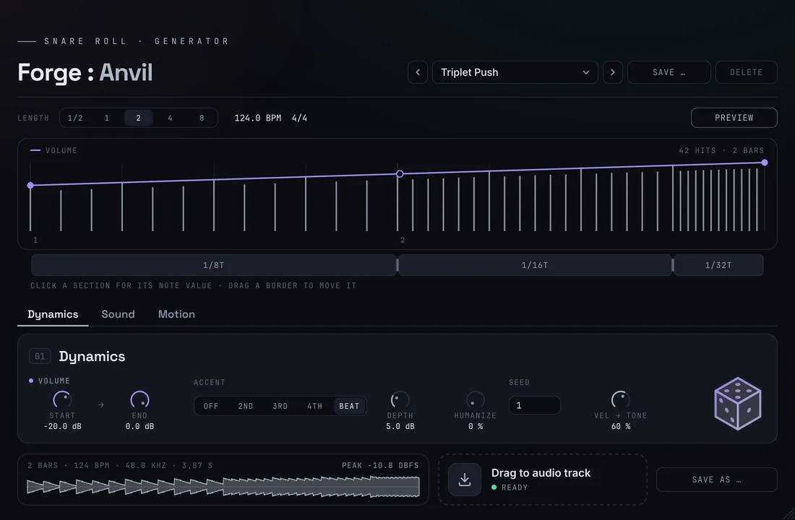
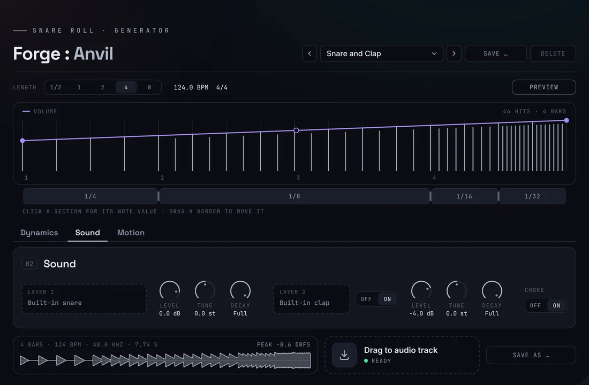
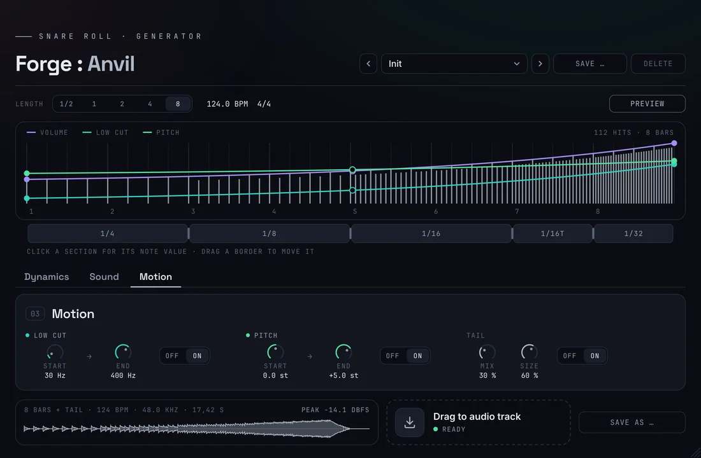

Scot & Millfield Forge · DocumentationForge :
Anvil
Hit after hit,
into the drop.
Crafted deep in the Ruhr, from coal and steel.

½–8 bars
6 sections
2 sound layers
8 factory presets
0 samples off the grid
Documentation
How it
works
A snare roll builds the tension before a drop: the hits come faster and louder until the drop takes over. Anvil plays it in time with your song and renders it as audio – set the length, shape the speed-up in the grid lane, and drag the result onto the track. Pick a topic.
01 / Installation
Set up
on Windows
Anvil comes as a ZIP: ScotMillfieldForgeAnvil_<version>.zip. A .vst3 is a folder. It runs in every DAW on Windows 10 or 11 (64-bit) that loads VST3 instruments. Windows only for now; a macOS version is in the works.
ScotMillfieldForgeAnvil.vst3 to C:\Program Files\Common Files\VST3\.Needs administrator approval02 / The roll
Faster without
speeding up
The tempo stays, the notes get shorter: quarters, then eighths, then sixteenths, then thirty-seconds. That is what makes a roll feel like it accelerates. Anvil splits the roll into sections, each with its own note value – or one section for a roll that keeps its pace.
Length
- ½, 1, 2, 4 or 8 bars at your project tempo and time signature. The roll ends exactly where the next bar begins – on the drop.
- A MIDI note starts the roll; its length comes from Anvil, not from the note. Preview starts it without a note.
- With the song playing, Anvil follows the song position and tempo changes, and places every hit on the exact sample.
Grid lane
- The lane below the curve view shows the sections. Click a section to choose its note value: 1/2, 1/4, 1/4T, 1/8, 1/8T, 1/16, 1/16T, 1/32 or 1/32T.
- The same menu has Split here (up to six sections) and Remove section.
- Drag a border to move it; it snaps to beats, with Ctrl to eighths.
- The borders are stored as a share of the length: switch from 4 to 8 bars and the whole shape stretches with it.
03 / Dynamics
Louder, with
a pulse
A roll starts quiet and grows. On top of that comes the feel of a player: some hits stronger than others, never quite the same twice. The tab Dynamics holds everything that shapes the level of the hits.

Controls
- Volume: start and end level of the roll, for example −24 dB to 0 dB. Shape the rise with the middle handle on the violet curve in the curve view.
- Accent: which hits stand out – every 2nd, 3rd or 4th note of a section, or every hit on the beat (Beat). Every 3rd over sixteenths gives a three-against-four feel. The others are Depth dB quieter; the roll as a whole still grows.
- Humanize: small differences in level (up to ±3 dB) and timing (up to ±6 ms), the first hit stays on the grid. Seed picks one variant: the same seed always gives the same roll.
- Vel → Tone: softer hits sound darker, as on a real snare; the loudest hits stay bright and crisp.
Magic Cube
- Click the cube for a new roll: sections, volume curve, accents and a little humanize. Length and sound stay as they are.
- Every roll has a number (“Magic 48213” in the preset bar); the same number always gives the same roll. Save one you like as your own preset.
04 / Sound
Your snare,
two layers
Anvil brings a snare and a clap of its own. Load your favourite samples instead – every hit of the roll plays both layers with the same level and tone.

Samples
- Layer 1 always plays (built-in snare). Layer 2 is switched on next to its field (built-in clap).
- Your own sample: drop a WAV, AIFF or FLAC of up to 10 seconds on the field of a layer, drag an audio event out of your DAW onto it, or click the field to choose a file. Mono or stereo, any sample rate. The × goes back to the built-in sound.
- The project remembers the file. If it has moved, the field says “File not found” and the built-in sound plays until the file is back.
Per layer
- Level: −36 to +6 dB.
- Tune: ±12 semitones.
- Decay: shortens the sample, from 10 ms to 2 s; all the way right is “Full”.
Choke
- With Choke on, every hit cuts off the one before on the same layer, in 5 ms. Fast rolls stay tight instead of blurring.
05 / Motion
Thinner, higher,
into the room
Three things that move with the roll, each with its own switch and off by default. Low cut and pitch show up as curves with handles in the curve view while the tab Motion is open.

- Low Cut: takes the bass out towards the drop – from 30 Hz to 400 Hz by default, anywhere between 20 Hz and 2 kHz. The roll gets thinner, so the drop hits harder.
- Pitch: every hit is tuned to the curve at its position, up to ±12 semitones – by default from 0 to +5.
- Tail: a reverb that rings on after the last hit, with Mix and Size. The exported file is then one bar longer; it still starts where the roll starts.
06 / Export
Onto the track
Anvil renders the roll in the background after every change. The foot of the window shows the waveform with length, tempo and peak.
- Drag to audio track: drag the tile onto an audio track and drop it at the start of the bar where the roll begins. It ends exactly on the drop.
- Save as … stores the same WAV wherever you like.
- 24-bit stereo WAV at your project’s sample rate, named after length, tempo and preset, e.g.
SnareRoll_4Bars_124BPM_Classic-Build.wav. - What you hear is what you get: playback and export come from the same engine, sample for sample.
- You can also keep Anvil on an instrument track, trigger it with a MIDI note four bars (or the chosen length) before the drop and render the track in your DAW – useful with tempo changes.
07 / Presets
Eight rolls
to start from
The preset bar sits at the top right, as in Patina, Ember and Furnace. A preset holds the roll and the sound settings; your samples stay as they are.
Your own presets
- Save … stores the current settings under a name; Delete only works on your own presets. “modified” shows when the sound differs from the loaded preset.
- Location:
Documents\Scot & Millfield Forge\Presets\Anvilas XML. - Every control is also a parameter in your DAW (“Anvil …”): automatable, and undoable where the DAW supports it.
08 / Tips
When something
sounds off
Fast rolls blur
Thirty-seconds with a long sample overlap. Switch Choke on, or shorten the Decay of the layer.
The sample is refused
Anvil takes samples of up to 10 seconds. If your snare sits inside a longer file, bounce the hit to a file of its own first.
The roll misses the drop
Drop the audio at the start of the bar where the roll begins, and check that the length in Anvil matches your plan. With tempo changes, render the instrument track in your DAW.
No sound at all
Without an activated license Anvil stays silent and exports nothing. Click License at the top right and activate this computer.